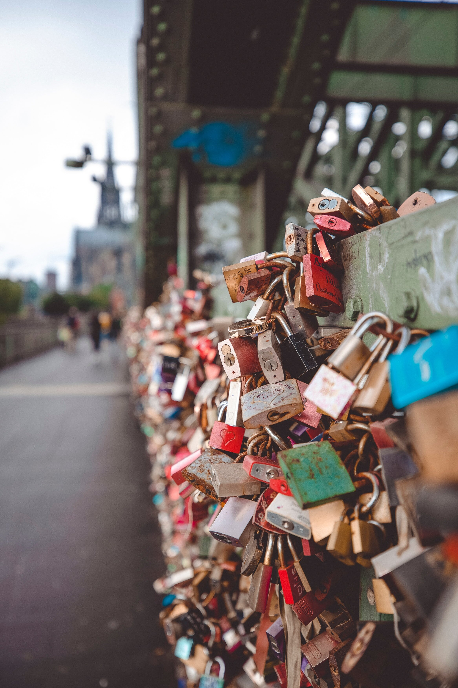

 Het wordt ook wel de stad van de liefde genoemd. Je kan heerlijk door de stad heen wandelen, de Eiffeltoren bekijken en beklimmen, shoppen in de duurste straten of een broodje eten op een terras. Er is ook hek van de Pont des Arts waar je een slot aan kan hangen en de naam van je geliefde en jezelf erop kan schrijven. Het gewicht over de hele brug werd geschat rond 700.000 kilo en alle sloten zijn in 2015 weggehaald vanwege instortingsgevaar. More info
In Zuid Korea is er verschil in een groet met een man of vrouw. Mannen geven naast een buiging vaak ook elkaar een hand, waarbij je met je linkerhand je rechterarm ondersteunt. Vrouwen geven elkaar een knikje. Verder is het geven van cadeaus een groot onderdeel. Sla daarom nooit een cadeau af. Alleen is het niet netjes wanneer je een cadeau opent, wanneer degene van wie je het gekregen hebt erbij is. Een van de andere Koreaanse beleefdheidsvormen zijn duidelijke tafelmanieren. Ouderen worden altijd als eerste geserveerd. En iedereen wacht totdat de oudste begint te eten. More info
 De Griekse cultuur is grotendeels ontstaan uit de christelijk Orthodoxe religie en het klimaat.
Veel tradities en gewoonten zijn verbonden met de religie, maar niet de populaire kralenketting. Deze gewoonte heeft
geen religieuze achtergrond maar is puur een gewoonte om verveling tegen te gaan.
Wanneer je in Griekenland bij iemand op bezoek gaat, is het de gewoonte om een kleinigheidje voor de gastheer of gastvrouw mee te nemen.
Meestal gaat het dan om taart, chocolade of bloemen.
More info
De Griekse cultuur is grotendeels ontstaan uit de christelijk Orthodoxe religie en het klimaat.
Veel tradities en gewoonten zijn verbonden met de religie, maar niet de populaire kralenketting. Deze gewoonte heeft
geen religieuze achtergrond maar is puur een gewoonte om verveling tegen te gaan.
Wanneer je in Griekenland bij iemand op bezoek gaat, is het de gewoonte om een kleinigheidje voor de gastheer of gastvrouw mee te nemen.
Meestal gaat het dan om taart, chocolade of bloemen.
More info